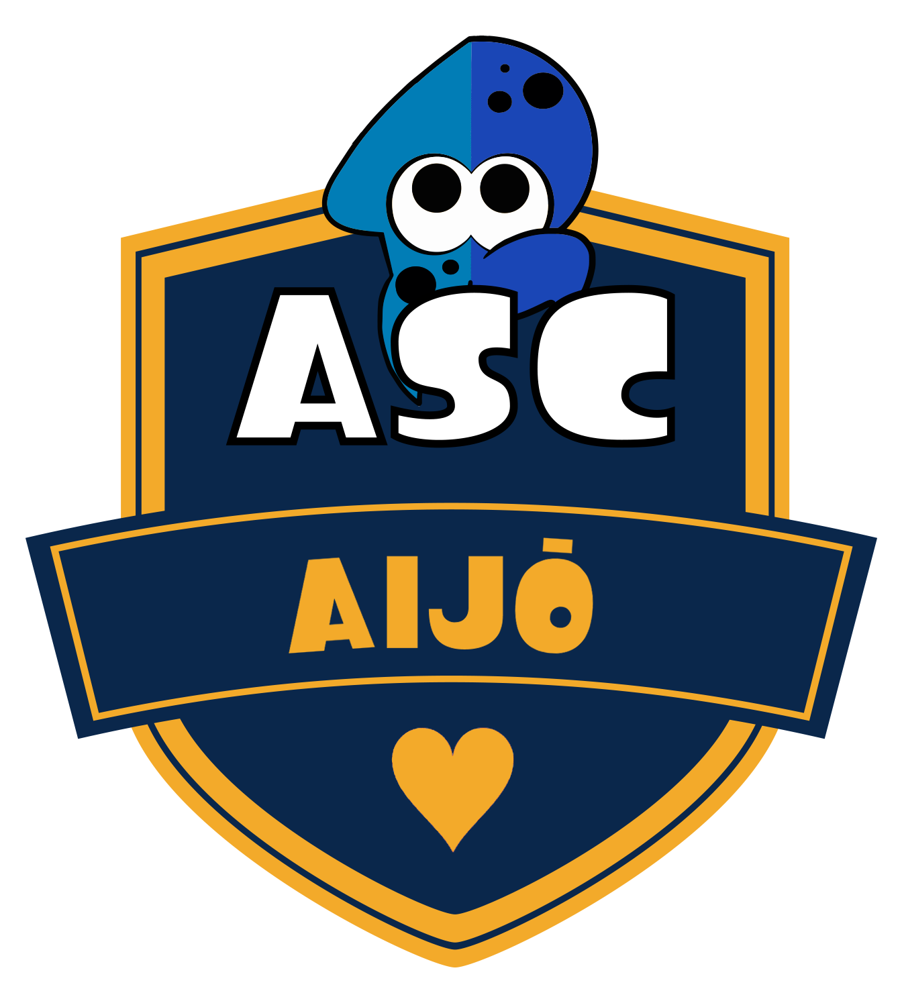
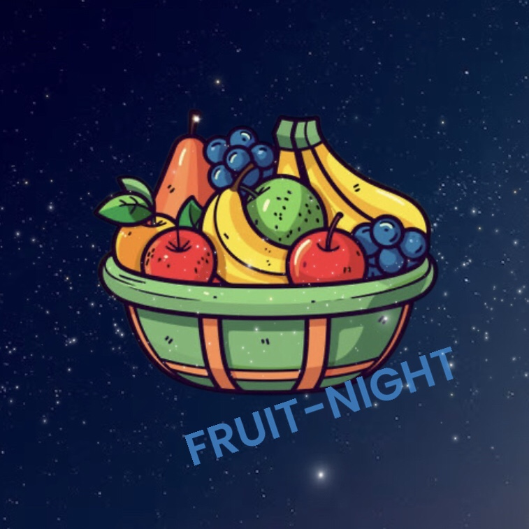
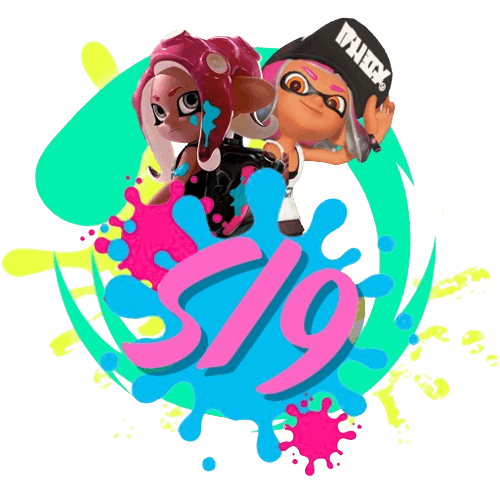
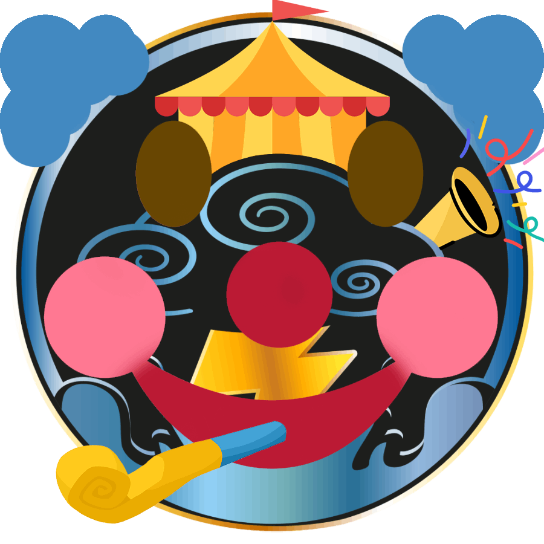
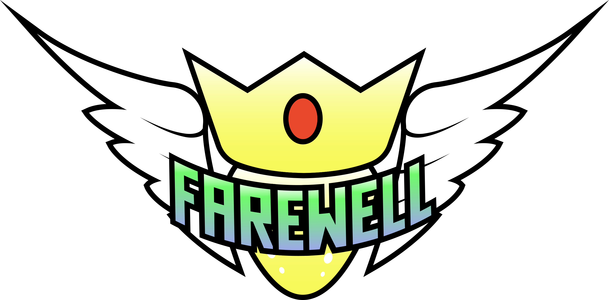
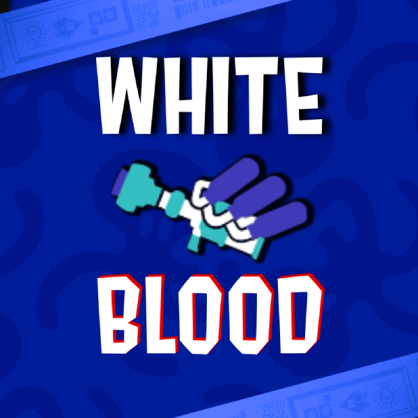
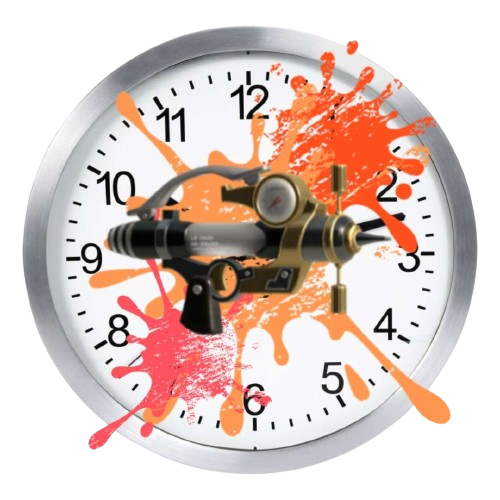
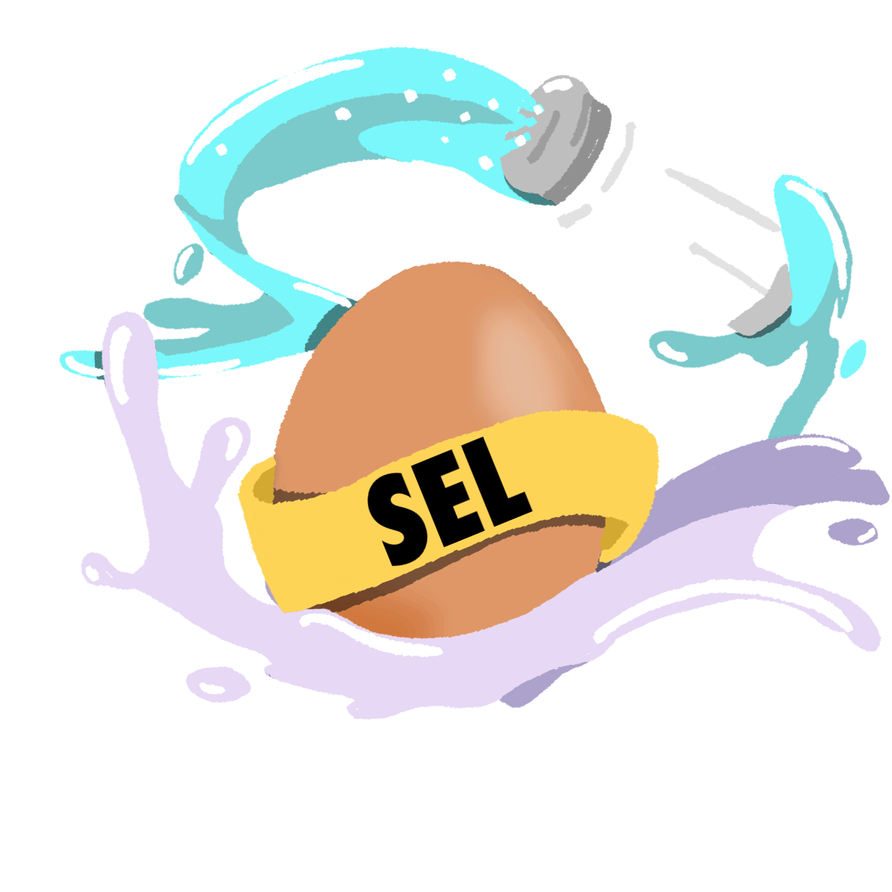
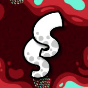
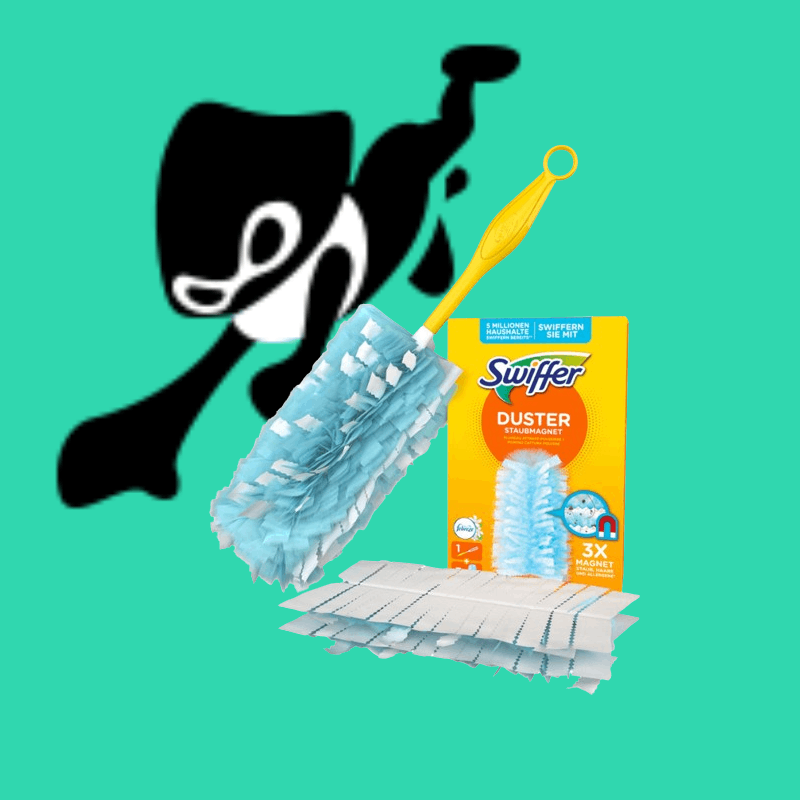

Les Défis
Les Défis sont une spécificité de la Soul League. Ils permettent de gagner des points en échange de la réalisation d'actions.
Sur cette page, retrouvez le classement des équipes de la Saison 2.
Accédez à la Liste des Défis pour connaître les détails de chacun.
| Equipe | Défis réalisés | Score |
|---|---|---|
| Persévérence (4) | Intégrité (1) | Détermination (2) | Peur (1) | Gentillesse (3) | 24 | |
| Persévérence (1) | Bravoure (1) | Intégrité (1) | Patience (1) | 9 | |
| Persévérence (4) | Intégrité (1) | 11 | |
| Persévérence (1) | Bravoure (1) | 4 | |
|  | Persévérence (4) | Bravoure (1) | Peur (1) | 10 |
|  | Persévérence (5) | Bravoure (2) | Détermination (1) | Patience (1) | Peur (1) | 16 |
|  | Détermination (3) | Persévérence (3) | Bravoure (1) | 13 |
|  | Persévérence (7) | Détermination (1) | Gentillesse (1) | Bravoure (2) | 18 |
|  | Haine (1) | Bravoure (2) | Persévérence (1) | 8 |
|  | Persévérence | Haine | 6 |
|  | Persévérence (4) | Détermination (1) | Intégrité (1) | Patience (1) | 15 |
|  | Bravoure (1) | Patience (1) | 2 |
|  | Persévérence (2) | Détermination (1) | Patience (1) | 9 |
| Persévérence (3) | Patience (1) | 7 | |
|  | Persévérence (2) | Peur (1) | Patience (1) | 8 |
| Persévérence (1) | Bravoure (1) | 4 |